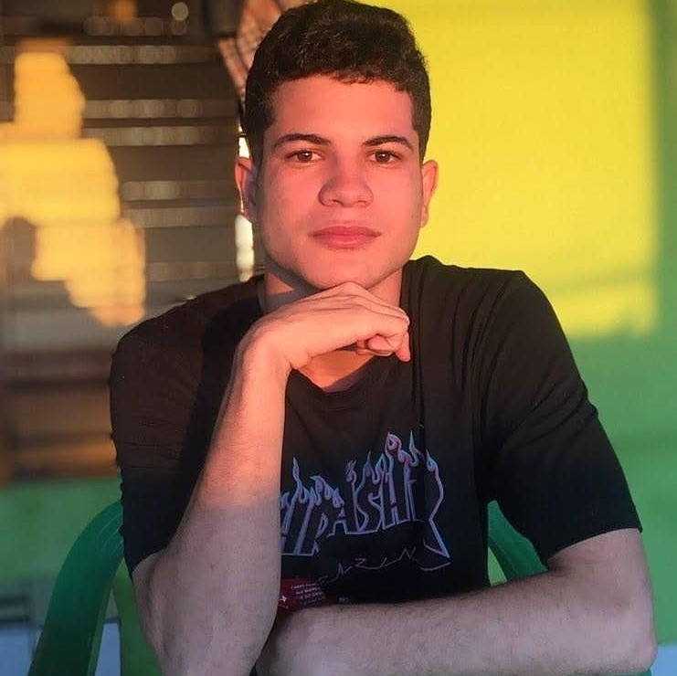

Sobre min
Olá, meu nome é Gabriel Lopes da Silva, tenho
23 anos de idade, sou estudante de análise e desenvolvimento de sistemas na Uninter, Resido em Recife-PE, Brasil.
Tenho interesse na área de teconologia, principalmente em desenvolvimento web e mobile.
Algns dos meus hobbies são: estudar, jogar games, assistir series/animes e ler mangás. Sempre gostei de teconologia e isso foi um grand efator para que eu escolhesse esse curso e essa caminho profissional.
